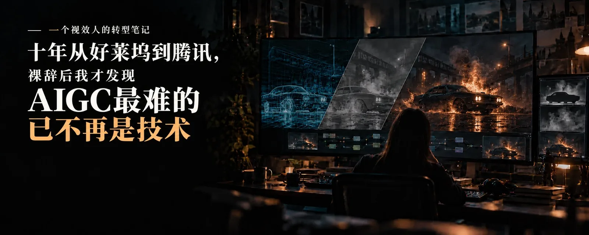
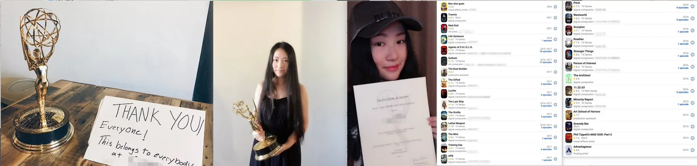
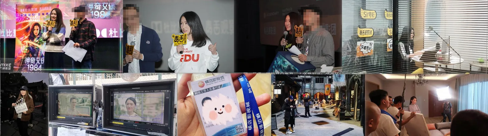
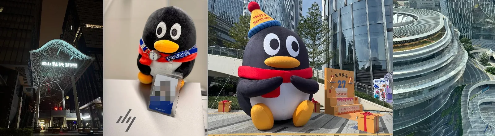
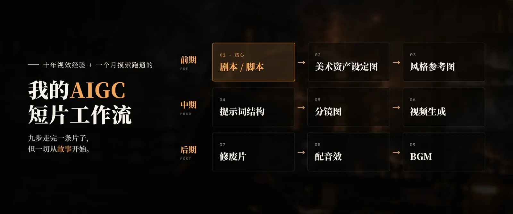
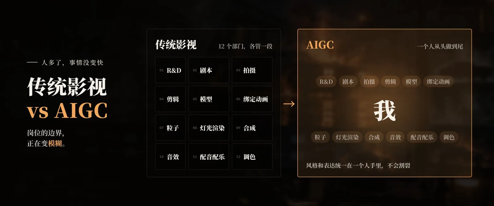
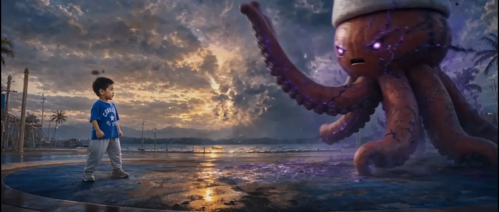
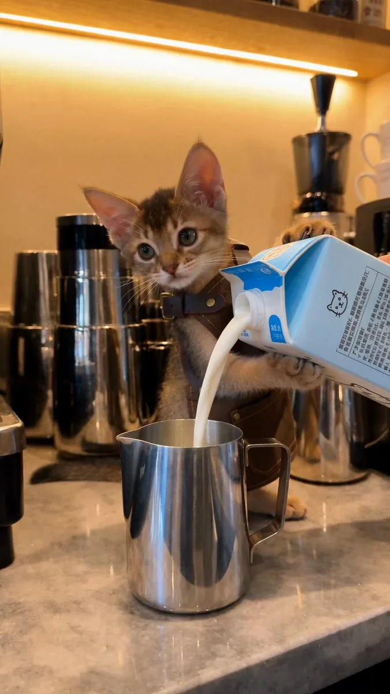

原文照录
原帖推文正文：“裸辞后烧的钱和踩的坑，都在这儿了。”长文导语：“做 AI 视频这几个月，我花钱最多、卡得最久的地方，跟我原来想的完全不一样。”
先说结论：当技术的门槛降到极低的时候，做 AIGC最难的已不是技术，而是怎么讲好一个故事，也就是内容。
我这么说可能挺反直觉的，按理说以我的行业经验，最拿手的应该是画面。当然，这跟我有合成和制片的底子有关，对没做过视频的朋友来说，技术和流程确实需要花时间去啃。
但自从我裸辞、All in AI 以来，技术层面的东西我花了一阵子就跑通了第一套制作流程，真正让我头大的，反而是「讲故事/Story Telling」。
下面我就聊聊，我是怎么一路撞到这堵墙上的。希望可以给你们带来一点参考或启发。
01. 来时路-好莱坞
我是做影视视效合成出身的。在好莱坞，我参与过《西部世界》《怪奇物语》《神盾局特工》和《哥谭市》等几十部科幻剧，当时所在的团队还凭借《哥谭市》的视效拿过艾美奖。

做视效有点像变魔法：演员对着空气演，我们负责把场景和画面一层层造出来，让观众信以为真。但合成对画面的要求是像素级的，边缘、颜色、运动模糊、景深、噪点，只要有一处没对上，观众在几米高的大屏幕上一眼就能看出来。这种活儿，真是痛并快乐着。
（对AIGC的帮助：一双挑细节的眼睛，和一点审美。）
02. 来时路-回国
后来因为家庭原因回国，我在国内 Top4 高校的宣传部待过，之后去了一家外企视效公司做视效制片兼视效总监。我把好莱坞那套成熟的流程带了进去，公司接的项目也越来越大，既有《流浪地球》这种院线电影，也有腾讯视频的知名剧集。一年里几个项目并行，最后交付了 5000 多个 VFX 镜头。期间我还客串过毒舌观影团的分享嘉宾，口罩期也尝试过做直播。
（对AIGC的帮助：资资产管理、流程管理、拆解复杂项目。）

后来和朋友一起创业，靠着口碑，活儿基本都是送上门的。但小团队经常缺人手，出了岔子只能自己顶上去，现学现做。
印象最深的一次是做某大厂的广告，客户来回改，deadline 却纹丝不动。我本来是制片，因为懂技术，干脆自己接过合成，连续熬了 48 小时肝完 50 个镜头，带着团队按时交付。熬到最后，我已经分不清是画面在抖还是我人在抖（做过广告的人肯定都懂）。
（对AIGC的帮助：快速上手新工具、搭工作流、硬着头皮也要交付的执行力。）
项目间隙我还考了 PMP，把管理能力从视效制片扩展到了跨行业管理。毕竟技多不压身，路得越走越宽嘛。

后来机缘巧合去了「腾讯游戏」，单纯想看看这个跟影视行业抢人才的地方到底是什么样。我做了游戏美术项目管理（APM），管过知名 IP 的剧情动画和 PV，也负责过游戏美术研发。
（对AIGC的帮助：敏捷思维、开发的语言和逻辑，能跟得上 AI 工具的迭代速度。）
03. All in AI
在腾讯干了两年，并且在当今AI的发展迭代不断加快，打破以往的认知，周围的氛围变得越来越紧张和焦虑。我逐渐发现，腾讯虽然是个很好的归属，但这其实不是我想要的，自己最想做的还是内容创作。
随着Seedance 2.0在影视运用上的逐步成熟，我心里开始蠢蠢欲动，想做点自己的东西。于是在今年7月裸辞，去干自己更喜欢的事情去了。（尽量别学我，没退路好好苟着）
-我卡在哪
给自己放假一段时间后，便开始全身心进入到AIGC的学习中去。
但这个过程并不容易，当时我以为AIGC里面最难的是学，是新工具。网上散落的教程，摸索了半天，也只能硬挤出来几秒画面，不想盲目烧Seedance的积分，于是原地打转。我相信很多从来没做过视频的人，都是卡在了这一步。
-3000元试错
于是我设定了一个3000元的预算，用来摸索和试错，在还未能独立完成一个完整的作品前，先找到适合自己的风格和工作流。
这放在以前传统视效动辄几千万特效的成本上，3000元可能只是你以前交学费、买教程的钱。所以不要卡在这里。（后续可分享省钱试错攻略，不要只盯着Seedance）
在测试的过程中，慢慢的整个工作流初步建立起来。那么下一步就该解决整个流程的核心：故事，也同样是剧本/脚本。

-为什么不组团队
我尝试过与别人一起合作，结果发现AIGC的发展太快，一直在迭代，还没有标准且固定的流程，大家也各自的审美和主观的想法，当团队里意见未完全达成一致的时候，会容易呈现在片子里，风格和表达就会割裂，观众是会感受到的。
这个时候便发现，和传统制作相反的是，人多了事情没变快，反而更累。因为AIGC各岗位的边界逐渐模糊，不再是以往可清晰拆开的各部门（R&D、剧本、拍摄、剪辑、模型、绑定动画、粒子、灯光渲染、合成、音效、配音配乐、调色）
经过几次实验，我决定还是先自己从头到尾做出完整的成品，才能摸索出自己的风格和工作流，和传达出自己想表达的内容。

04. AIGC第一段完整的作品《曜曜侠》
摸索了一个月，还在跟GPT纠结故事的时候。眼看当月Seedance积分过期要清零了，就临时做了一个用好莱坞套路的超级英雄故事，只是为了给小孩提供情绪价值：让他穿上盔甲，在我们家楼下的公园里打败怪兽。

当时用的是 Seedance 2.0，老实说那时候我也挺难控制住 AI 的，一个镜头经常得反复抽卡。我心里那个「做合成的自己」总盯着瑕疵想改，但另一个「做制片的自己」却在盘算：按当下的成本和技术，能把想法变成一段能看的片子就很不错了。最后我给自己划了条及格线：只要故事能看懂、没明显穿帮就过，小瑕疵留给下一条。先搞出个 MVP，先完成，再谈完美。
短短2分18秒，前后打磨花了大半个月，不算GPT的，Seedance成本就花了800元，抽卡还是太多了。
片子发出去了，认识曜曜侠的人看了会觉得亲切，也认得出这是楼下公园的章鱼雕塑。但网友们没这些前置信息，他们看到的只是个穿盔甲的小孩在打怪兽，可能觉得挺有大片感的，但没啥共鸣。
而且我当时还带着传统影视那种娓娓道来的叙事习惯，铺垫太长，冲突来得也晚，放在短视频里节奏明显太慢了。短视频讲究的是黄金三秒、强冲突和强悬念，这才是最考验人的。不光要会讲故事，还得学着找网感，这样才会有点击量，才会被大家看到。
现在的技术门槛真的是越来越低了，Opus 5.5 这种甚至能一键出片，做一些有视觉冲击力的镜头比过去容易得多。那么怎么才能做出差异化，从一堆同质化的内容里杀出来？讲一个让陌生人愿意看完、又踩准短视频节奏的故事，成了我现在最重要的创作方向。
带着这些总结和反思，我开始琢磨下一个选题了。
05. AIGC第二段完整的作品《阿比AI小猫-莫莫的Vlog》
传统非遗手艺人开始培养网感，并且找对标账号进行拆解，经过一些R&D，并且为了弥补我想养但养不了的愿望，干脆做了一只叫莫莫的AI小猫。
经过《曜曜侠》的实战锻炼，我彻底打通了自己的工作流。所以第一集出得挺快，只用了 1 天，花了 80 块钱，一段 30 秒的视频就完工了，制作时间和预算都控制得挺满意。
第一集发出去，有人说可爱、想看后续，这也给了我做下去的动力。
现在，我给它也开了账号，就当是莫莫这只虚拟小猫的Vlog，看看评论区大家喜欢哪个表情哪个动作，记住了哪段故事，希望他做什么，也会把这些反馈带进后面的创作里。希望慢慢地，它能成为一只大家熟悉的小猫。有人看过一集，会惦记着它下一次出现。
我感觉自己总算体会到了当导演和编剧的乐趣。以前得靠一整个团队才能讲完的故事，现在我一个人也有机会把它做出来了。

06. 最后
从以前在好莱坞做那些像素级的合成，到现在一个人从头到尾搞定一条 AIGC 片子，我其实一直在做同一件事：内容为王，先完成，再完美。
下一篇，我会把《曜曜侠》这2分多钟的制作过程拆开了聊聊：好莱坞套路是什么、钱到底花在哪了、哪些镜头没用成、剪辑最后又救回来些什么。
如果你对这些感兴趣，或者自己动手时也遇到了卡壳的地方，欢迎来连接。
作者在评论区的补充
- 有人问《曜曜侠》到底怎么做的，作者答：“等我下次拆解出来就一目了然了😎”；多位读者催教程，作者都回复会尽快“搓”出来、“我明天开始搓！”。
- 有读者担心画面质量，作者答：“只要有好的故事和表达 画面不重要”。
- 有读者感叹起点差距，作者答：“AI时代 大家起跑线都一样啦”。
- 有读者夸小猫，作者答：“小猫可爱～还在想他下集故事”。
- 对“裸辞”很勇敢的评价，作者答：“其实比较任性🤣”；对新手则说：“慢慢学 不要怕试错 我尽快搓教程”。
以上为作者本人回复的转述，其余为寒暄，未收录。
读后要点
| 作品 | 时长 | 工具 | 周期 / 成本 | 作者复盘 |
|---|---|---|---|---|
| 《曜曜侠》 | 2 分 18 秒 | Seedance 2.0 + GPT 写故事 | 大半个月；Seedance 约 800 元 | 抽卡太多；铺垫长、冲突晚，熟人有共鸣，陌生网友没有 |
| AI 小猫莫莫 第 1 集 | 30 秒 | Seedance 2.5 | 1 天；80 元 | 工作流打通后成本降一个数量级；开账号按评论反馈迭代角色 |
- 先设试错预算：3000 元用来摸索风格和工作流，作者认为不该卡在“怕烧积分”这一步。
- 先完成，再完美：给自己定及格线，故事能看懂、没明显穿帮就过，先出 MVP。
- 一个人做完整条：AIGC 流程尚无定式、岗位边界模糊，多人协作容易让风格割裂，所以她选择从头到尾自己做。
- 短视频叙事：黄金三秒、强冲突、强悬念，还要找“网感”；传统影视那种娓娓道来的节奏在短视频里显慢。
- 作者预告下一篇会拆解《曜曜侠》的制作过程：好莱坞套路、钱花在哪、哪些镜头废了、剪辑救回了什么。
本站相关：乔布斯讲故事的八种手法 · AI 武打的物理逻辑 · Story2Board AI 分镜。
版权处理：原帖是作者本人的中文长文，按本站惯例全文照录；配图与视频封面帧版权归作者，仅为阅读需要转载，视频未下载，请到原帖观看。原文“资资产管理”等笔误照录未改。帖中未链接任何代码仓库或外部站点。